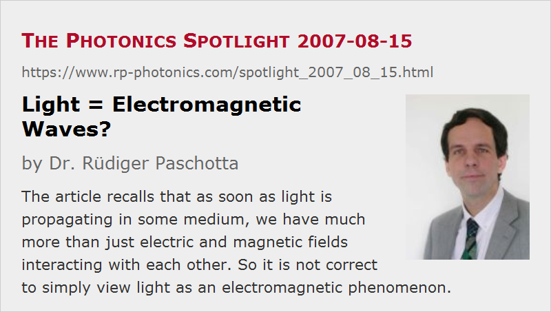

Light = Electromagnetic Waves?
Posted on 2007-08-15 as a part of the Photonics Spotlight (available as e-mail newsletter!)
Permanent link: https://www.rp-photonics.com/spotlight_2007_08_15.html
Author: Dr. Rüdiger Paschotta, RP Photonics Consulting GmbH
Abstract: The article recalls that as soon as light is propagating in some medium, we have much more than just electric and magnetic fields interacting with each other. So it is not correct to simply view light as an electromagnetic phenomenon.

Ref.: encyclopedia articles on polarization waves, nonlinear polarization
It is very commonly assumed that light is physically nothing else than electromagnetic waves. One then easily overlooks a wide range of essential phenomena which are also involved in many cases of light propagation. This occurs as soon as light enters some medium:
- In a transparent medium, an electromagnetic wave will inevitably interact with all the charged particles. This interaction may be very weak for waves with very high frequency, such as X-rays or gamma rays. In the optical spectral region, however, the interaction substantially modifies the propagation characteristics. The usually most important effect is that the electromagnetic wave induces an electric polarization wave, which itself modifies the electromagnetic field. This interaction usually leads to a reduced phase velocity, as determined by the refractive index, and to chromatic dispersion, arising from the frequency dependence of such quantities. The fact that we can still describe such phenomena with Maxwell's equations, simply including some electric susceptibility of the medium, somewhat disguises that not only some electric and magnetic fields are interacting with each other.
- In some extreme cases, we obtain slow light, having a group velocity orders of magnitude below that of light in vacuum. What propagates there is far from a pure electromagnetic wave. In the most extreme experiments, a pulse of light is even brought to a halt. Its energy is effectively stored in the medium, until the pulse is released again by modifying some conditions.
- Another interesting phenomenon is that of plasmons, which are essentially electric oscillations involving the free carriers of some metallic particles or surfaces. One may be tempted not to use the term light for such phenomena, but it is not easy to set up definitions which clearly separate such phenomena into different domains.
- In the context of nonlinear frequency conversion, new frequency components are generated by radiating nonlinear polarization waves.
So we see that only light in vacuum can be fully described as an electromagnetic wave, while there is much more to be explored for light propagating in media.
This article is a posting of the Photonics Spotlight, authored by Dr. Rüdiger Paschotta. You may link to this page and cite it, because its location is permanent. See also the RP Photonics Encyclopedia.
Note that you can also receive the articles in the form of a newsletter or with an RSS feed.
Questions and Comments from Users
Here you can submit questions and comments. As far as they get accepted by the author, they will appear above this paragraph together with the author’s answer. The author will decide on acceptance based on certain criteria. Essentially, the issue must be of sufficiently broad interest.
Please do not enter personal data here; we would otherwise delete it soon. (See also our privacy declaration.) If you wish to receive personal feedback or consultancy from the author, please contact him e.g. via e-mail.
By submitting the information, you give your consent to the potential publication of your inputs on our website according to our rules. (If you later retract your consent, we will delete those inputs.) As your inputs are first reviewed by the author, they may be published with some delay.
|  |
If you like this page, please share the link with your friends and colleagues, e.g. via social media:
These sharing buttons are implemented in a privacy-friendly way!